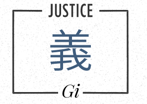
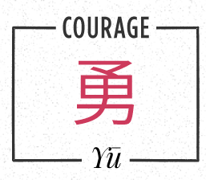
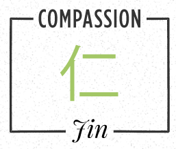
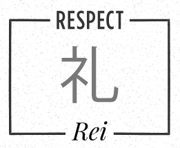
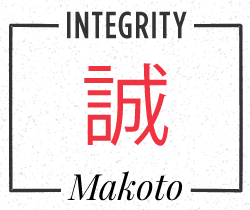
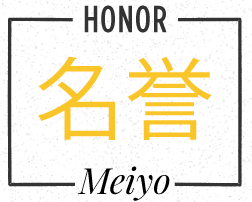
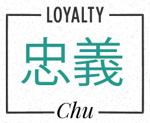

Rectitud (義, Gi)
La rectitud es la capacidad de tomar decisiones justas y actuar con integridad.
Valor (勇, Yu)
El valor no es la ausencia de miedo, sino la fuerza para enfrentarlo y actuar con determinación, incluso en los momentos más difíciles.
Compasión (仁, Jin)
La compasión es la virtud de entender el sufrimiento ajeno y tender una mano amiga, cultivando la bondad y la empatía en cada acción.
Respeto (礼, Rei)
El respeto es el fundamento de las relaciones humanas, honrando a los demás y reconociendo su dignidad, sin importar su posición o condición.
Sinceridad (誠, Makoto)
La sinceridad es vivir con autenticidad, siendo fiel a uno mismo y a los demás, sin máscaras ni engaños.
Honor (名誉, Meiyo)
El honor es la brújula moral que guía nuestras acciones, manteniendo la integridad y la dignidad incluso en las circunstancias más adversas.
Lealtad (忠義, Chu)
La lealtad es el compromiso inquebrantable con aquellos a quienes servimos, defendiendo sus intereses y valores por encima de todo.